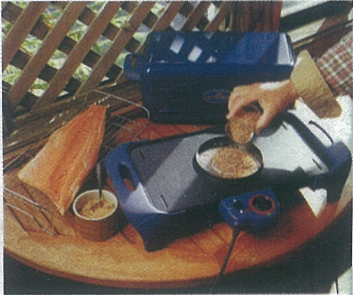
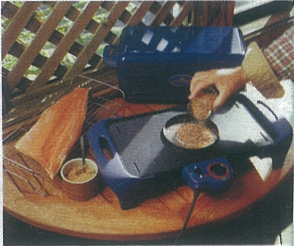

Коптильное устройство,
идет ли речь о простой самоделке или хитроумном устройстве промышленного изготовления для горячего копчения, в принципе состоит из четырех частей, которые технически могут быть более или менее усовершенствованы:
1. Корпус, в котором укладывается продукт, обволакиваемый со всех сторон дымом и поднимающимся к верху теплом.
2. Решетка, на которой держится продукт.
3. Емкость для коптильной крошки и опилок.
4. Источник тепла, вызывающий тление опилок.
Тепло может быть получено от спиртовой, газовой горелки или электричества.
Для быстрого (горячего) копчения, в первую очередь рыбы, лучше всего подходят электроприборы.
У этих приборов встроенная нагревательная спираль служит для образования находится в термостатическом состоянии, что обеспечивает равномерность температурного поля.
Для образования дыма используется чистые, очень мелко размолотые опилки, в первую очередь, буковые, затем березовые, ясеневые, ольховые, кленовые или их смеси.
Хорошие результаты также дают мелкие веточки плодовых деревьев – вишни, груши и др.
В зависимости от модели и изготовителя, некоторые из этих устройств оснащены таймерами и, в зависимости от размеров, одной или несколькими съемными решетками для продуктов.
Коптильный аппарат для домашнего горячего копчения АНУКА, разработанный новозеландской фирмой «Гидрафлоу Индастриз Лимитед», построен по классическому типу.

Коптильня ANUKA Electric Hot Food Smoker комплектуется:
- Крышка.
- Решетачные подставки.
- Основание с териоэлементом.
- Всепогодный чехол .
- Мерный стакан
- Регулятор питания.
- Книга пользователя/ рецепты.
- Приемник опилок.
Спецификация:
- 1. Питание – переменным током 220-240 В, 50Г
- 2. Потребляемая электрическая мощность – 500 Вт
- 3. Материал: основные – литой алюминий с антипригарным покрытием; крышка – металлическая с высокотемпературным покрытием безопасным для пищевых продуктов; двойная решетчатая подставка – хромированная нержавеющая сталь; ручки корпуса – термоустойчивый карбоновый пластик.
- 4. Размеры: прибора – (L x W x H) 560мм х 260мм х 260мм; решетки – (L x W) 360мм х 195мм
- 5. Вес прибора – 5,4 кг
- 6. Гарантия – 12 месяцев
- 7. Дополнительные аксессуары: мерный стакан для дозировки опилок и всепогодный защитный чехол
Основание коптильни представляет собой литую платформу на ножках, в корпусе которой установлены: электрически изолированная от внешнего пространства нагревательная спираль, соединенная с лотком для приема опилок и блок таймера механического типа с электрошнуром питания прибора.
Нагревательная часть (лоток) выполнена из нержавеющей стали.
В корпусе (в нижней его части) имеется два небольших щелевых отверстия для вывода избыточного (отработанного) дыма и поступления кислорода на этапе разгорания.
Мерный пластиковый стакан позволяет дозировать объем засыпаемых в приемный лоток опилок, что обеспечивает регулировку интенсивность (густоты) дымового потока, а именно:
Слабое по интенсивности копчение – 1/2 стаканчика опилок
Среднее по интенсивности копчения – 1 стаканчик опилок
Сильное по интенсивности копчение – 2 стаканчика опилок
Принцип работы коптильни:
1. Распределить опилки и стружку по поверхности коптильного лотка в дозированном количестве.
2. Поместить подготовленный для копчения продукт на решетку и поместить её на основание.


 

3. Накрыть крышкой и установить температуру и время копчения согласно выбранной рецептуре.
4. Коптильня автоматически отключится в установленное на таймере время после окончания процесса копчения.
5. Оставить на 5 минут продукт в коптильне для охлаждения и можно подавать его к столу.
Способом горячего копчения обрабатываются:
- карповые (жерех, кутум, лещ, сазан, чехонь)
- осетровые (севрюга, осетр, стерляди)
- тресковые (треска, пикша, налим)
- лососевые (кета, горбуша)
- макрелевые (скумбрия, угорь, сиг, минога, сельдь, корюшка, морской окунь, палтус, салака, барабуля , сом и др.)
- морепродукты (мидии, моллюски, гребешки, креветки)
- колбасы (копчение и полукопченые)
- отрубы и филе свинины, говядины, баранины, дичи и птицы
- овощи (перец сладкий, картофель, грибы, лук, помидоры и др.)
- орехи
- некоторые виды твердых сыров
- варёные яйца
- вина и пиво
рыбы, поступающие в свежем или мороженом виде, а именно:
| Продукт | Температура, °С | Время копчения, мин |
| Форель | 150-190 | 15-20 |
| Карп | До 200 | 50-60 |
| Филе морского окуня | 150-190 | 10-20 |
| Пикша | 150-190 | 20-25 |
| Камбала морская | 150-190 | 15-20 |
| Палтус | 175-190 | 15-20 |
| Морской язык | 150-190 | 15-20 |
| Скумбрия | 150-190 | 15-20 |
| Сельдь | 80-90 | 120 |
| Угорь | 50 | 70-90 |
| Лосось | 170-190 | 25-35 |
| Лососевые рыбы | 150-190 | 15-18 |
| Молюски | 160-190 | 6-8 |
| Ягнятина | 190-220 | 50-60 |
| Стейк | 190-200 | 10-15 |
| Кассельский окорок | 190-220 | 35-40 |
| Ножка | 190-230 | 90-120 |
| Телятина | 190-220 | 70-90 |
| Корейка | 190-200 | 12-15 |
| Карбонад | 180-190 | 10-15 |
| Цыпленок | 180-190 | 45-60 |
| Индюшиные окорока | 190-200 | 60 |
| Утка | 190-200 | 120-150 |
| Куриная грудка | 190-200 | 30 |
| Перепел | 180-190 | 30-40 |
| Вареные и полу копченые колбасы | 70-80 | 20-180 |